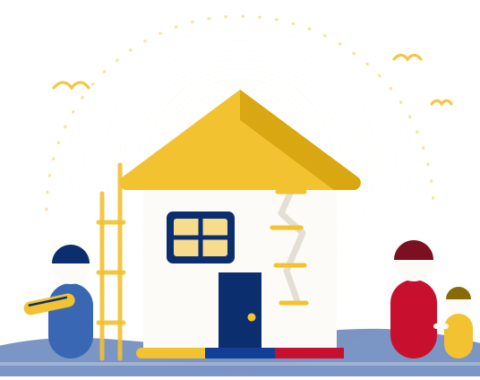

Mi casa se dañó
Cuente qué pasó y qué necesita. Es gratis y no pide ningún papel.
Pedir ayudaFamilias que perdieron su casa. Profesionales y voluntarios que quieren ayudar. Aquí se encuentran.

Toque el recuadro que corresponda. Solo hay tres caminos.
Cuente qué pasó y qué necesita. Es gratis y no pide ningún papel.
Pedir ayudaArquitectura, ingeniería, salud, psicología, derecho. Escoja una familia y acompáñela.
InscribirmeNo necesita título. Pegar bloque, manejar, cocinar, cuidar niños: todo sirve.
Ser voluntario← Deslice para ver los tres caminos →
Cuatro pasos. Nada más.
Sube fotos de la casa y escribe qué necesita. Desde el celular, en cinco minutos.
Revisamos cada caso antes de publicarlo. El teléfono y la dirección nunca salen.
Un profesional o un voluntario escoge el caso y dice a qué se compromete.
El caso queda con nombre propio y se marca resuelto cuando la familia lo confirma.
Toque lo que le hace falta y vea qué familias lo están pidiendo.
Casos verificados que todavía no tienen a nadie acompañándolos.
← Deslice para ver más familias →
Por eso esta plataforma existe.